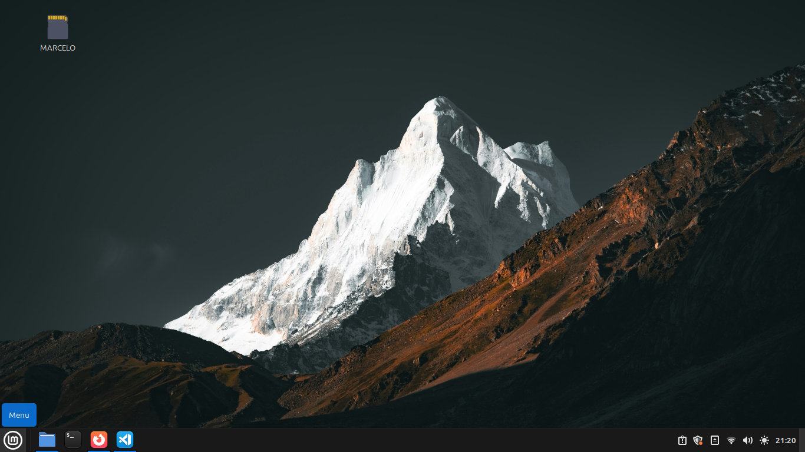
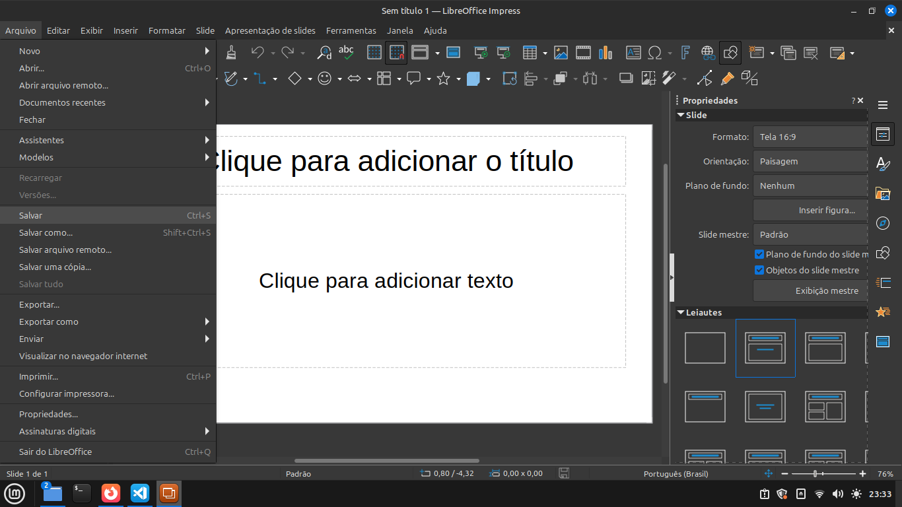
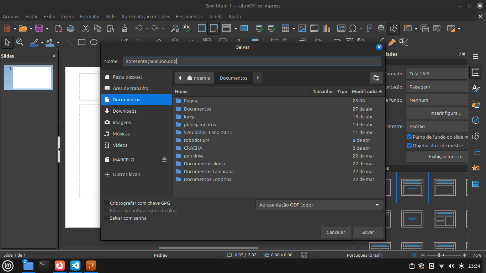
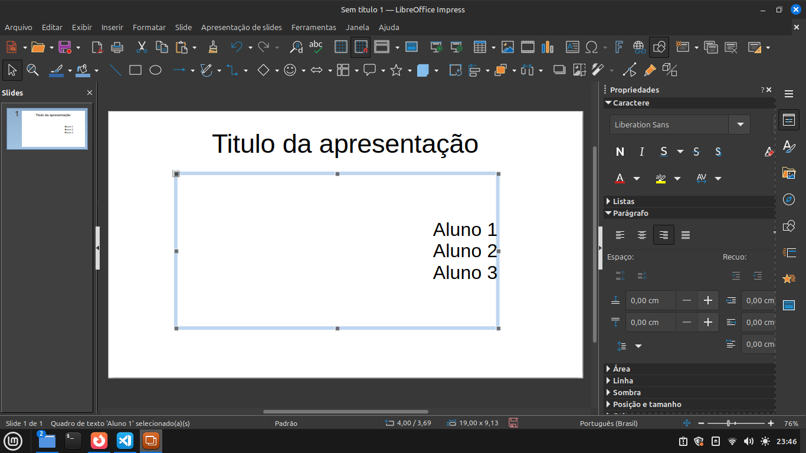
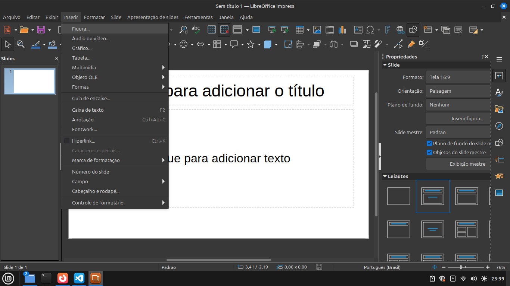
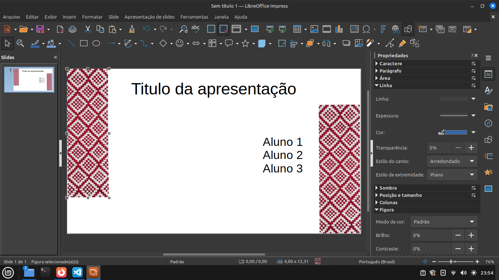

Informatica Básica e Robótica
Apresentação no Libre Office Impress
Nesta aula vamos usar o libre Office Impress, para entra vamos no menu do linux mint

escolha Escritório depois Libre Office Impress

Ao abrir o programa fecha a janela de escolha de estilo de slide, e vá em Arquivo e Salvar

escolha a pasta documentos para isso e coloque
apresetação e nome do alunos, exemplo Apresentaçãoaluno.odp e salvar como na imagem abaixo:

feito isso coloque no texto de cima o titulo da sua apresentação e logo abaixo os nomes dos alunos do trio donos da apresentação

para adicionar uma imagem basta ir em Inserir depois em Figura escolhe na pasta Imagens as que você salvou e adicione na sua presentação

Colocando a imagem clicando no centro da imagem e você pode arrastar a imagem para onde achar melhor, se clicar nas estremidades da imagem pode aumentar e diminuir ou gira-la.

agora basta ir duplicando os slide e colocando os topicos de sua apresentação
Atividade
- Agora faça uma apresentação no Libre Office Impress falando da cultura kaingang, com quantas comunidades no Brasil e no Paraná?, Quantas
liguas são faladas no Brasil? Quantas Comunidades no Paraná e onde elas estão? Como é a educação da sua Comunidade e etc....